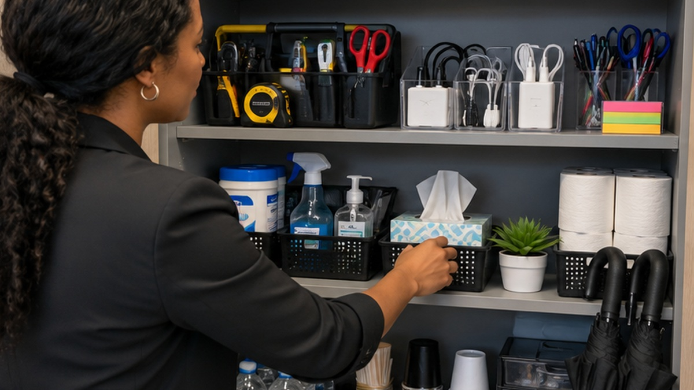

Office Checklist
A prepared office has more than pens and printer paper. The right supplies can solve everyday problems, help during an emergency, and keep employees and visitors from scrambling when something unexpected happens.

A well prepared office is not about filling cabinets with things nobody uses. It is about having the basics ready before the moment somebody suddenly needs them. A small supply can save time, reduce stress, help a visitor, or make an unexpected problem much easier to handle.
A first aid kit that is actually stocked
A first aid kit should be easy to find, easy to reach, and checked often enough that the useful items are still there when someone needs them. Bandages, gauze, antiseptic supplies, gloves, cold packs, and other basics can help with minor workplace injuries while appropriate medical help is arranged when necessary.
Why it matters is simple, a kit is not helpful if everyone knows the office owns one but nobody knows where it is, or if the most commonly used supplies disappeared months ago. Workplace first aid requirements can depend on the workplace and applicable rules, so employers should review the requirements that apply to them.
Flashlights, batteries, and basic emergency supplies
Most people reach for their phone when the lights go out, but an office should not depend on everyone having a charged phone during an outage or emergency. Keep dedicated flashlights, fresh batteries, and basic emergency supplies in a known location.
Emergency preparation also goes beyond supplies. Employees should know how emergencies are reported, where exits are, and what the workplace expects them to do if they need to evacuate or shelter. A plan is much more useful when people know it before something happens.
Chargers, cables, and backup power
Someone will eventually forget a charger. A visitor may arrive with a nearly dead phone, an employee may need to work from a different area, or a power interruption may make a portable battery useful. Keep a small collection of common charging cables, wall adapters, and a few charged power banks.
Labeling the office chargers can also keep them from slowly disappearing into desks, bags, and conference rooms.
A small tool kit
An office does not need a workshop, but a screwdriver set, pliers, measuring tape, scissors, box cutter, small hammer, and a few other basics can solve ordinary problems quickly. Think loose furniture hardware, a package that needs opening, a frame that needs adjusting, or something small that needs assembling.
Keep the tools together in one place so employees are not searching five desks for the one screwdriver everyone remembers seeing last month.
Breakroom basics that go beyond coffee
A useful breakroom needs the things people reach for when food actually arrives. Cups, utensils, napkins, paper towels, dish soap, food storage bags or containers, trash bags, and drinking water make lunches, meetings, and office celebrations easier.
If the office provides coffee or snacks, keep a simple restocking routine. Nobody wants to discover there are plenty of coffee pods but no cups ten minutes before a meeting.
Restroom backup supplies
Keep extra toilet paper, hand soap, paper towels, tissues, and trash liners available before the current supply runs out. Feminine hygiene products are also a thoughtful addition for employees and visitors who unexpectedly need them.
The important part is not just owning the backup supplies, it is making sure the person responsible for restocking knows where they are.
The things nobody thinks about until someone asks for them
This is where a prepared office can really stand out. Keep stain remover for the coffee spill before a presentation, umbrellas for an unexpected rainy walk to the parking lot, a small sewing kit for a loose button, mints, tissues, bottled water, tape, sticky notes, spare pens, and a few extension cords or surge protectors.
None of these items feels urgent when you are ordering office supplies. The value appears the exact moment somebody needs one.
Emergency contacts and the plan itself
Supplies cannot replace a workplace emergency plan. OSHA recommends emergency action planning and identifies procedures such as reporting emergencies, evacuation routes, accounting for workers after evacuation, and identifying the people employees can contact for more information. Ready.gov also encourages businesses to plan for communications, continuity, technology recovery, and other disruptions.
Keep important information somewhere employees can access it, review the plan when responsibilities change, and make sure new employees know the basics. The goal is not to make the office feel worried about emergencies. The goal is to avoid figuring everything out for the first time during one.
A prepared office makes ordinary days easier too
The best office supplies are often the ones nobody notices until they are needed. Start with safety and emergency readiness, then add the practical things that solve everyday problems. Check the cabinet periodically, replace what has been used, and make sure the people in the office know what is available.